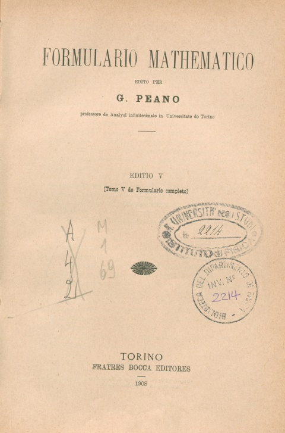
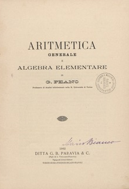

Peano è famoso soprattutto per il suo contributo dato ai fondamenti della logica matematica: nel 1900, partecipa al celeberrimo Congresso di Parigi (lo stesso in cui David Hilbert annuncia la famosa lista di 23 problemi matematici irrisolti). In quell’occasione, un giovanotto inglese di ventotto anni, Bertrand Russell scrisse nelle sue memorie:
“Notai che nelle riunioni del congresso egli era sempre di gran lunga più preciso di ogni altro, e che inevitabilmente finiva con l’avere la meglio in ogni discussione che affrontava. Col passare dei giorni, conclusi che questo doveva dipendere dalla sua logica matematica. Compresi allora che la sua notazione era quel potente strumento di analisi logica che io ero andato a cercare per anni...”.

Infatti, un contributo fondamentale che gli si riconosce è ad esempio la definizione di notazioni matematiche entrate nell'uso corrente, come, per esempio, il simbolo di appartenenza (es: $$x \in A$$) o il quantificatore esistenziale "$\exists$".
Ma le peculiarità del nostro non finiscono qui: tanto per cominciare, aveva una capacità eccezionale nello scoprire gli errori e le debolezze logiche nelle dimostrazioni e non minore era la sua assoluta dedizione al rigore matematico. La ricerca della chiarezza, dell’esattezza e della completezza lo portarono ad affrontare i fondamenti della matematica, che è il settore dove diede il meglio di sé. Il Peano che strappa ammirazione a Russell aveva già stilato i cinque famosi “Assiomi di Peano” che tentano di stabilire i fondamenti dell’aritmetica.
Uno dei progetti più ambiziosi del matematico cuneese fu il “Formulario Mathematico”, con l’intento di raccogliere tutto lo scibile matematico in un testo che usasse una notazione efficiente. Scrisse quest’opera nella sua Interlingua, chiamata a volte anche “latino sine flexione”, che restò la sua ossessione per il resto della sua vita. Peano è così convinto dell’importanza del linguaggio da ritenere che prima ancora della lingua matematica fosse fondamentale rifondare la lingua comune, per rimuovere alla radice le possibili ambiguità.
Ma veniamo all’argomento principale di questa pagina. Nel mese di gennaio del 1890 Peano aveva pubblicato sui ``Mathematische Annalen'' la nota
Sur une curve qui remplit toute une aire plane
dove, per la prima volta, compare una curva che passa per tutti i punti di un quadrato, ovvero una funzione continua e suriettiva \[f: [0, 1] \to [0, 1]\]

La scoperta non è un vezzo o un passatempo intellettuale: la curva di Peano è una scoperta fondamentale per la teoria degli insiemi;
una curva continua in grado di riempire lo spazio non si pensava potesse esistere.
Per le tradizionali concezioni della Matematica, l’effetto è dirompente e contribuisce a riaccendere le dispute fra i sostenitori del formalismo e chi alle proprietà degli enti matematici richiede un certo grado di intuitività.
“Uno dei fatti più notevoli della Teoria degli insiemi”
(Felix Hausdorff, qualche anno più tardi)
Da lì a un anno, il celebre David Hilbert (1862-1943) proseguirà su questa strada, descrivendo in passi successivi analoghe “curve che riempiono un’area”.
Prima di un’accurata trattazione matematica, lasciamoci stupire da ciò che succede nel costruire questa curva: si comincia con un singolo punto (dimensione zero) all’interno del quadrato, si costruisce una curva (dimensione uno) che istericamente riproduce curve e meandri, fino a riempire integralmente il quadrato iniziale, che è notoriamente una figura piana (dimensione due).
Tra l’altro, il salto dimensionale si ottiene proprio con un metodo che è evidentemente un progenitore dei metodi generanti i frattali, oggetti di dimensione frazionaria.
Dopo questo risultato, è inevitabile che riparta la questione: ma che cos’è dunque una curva?